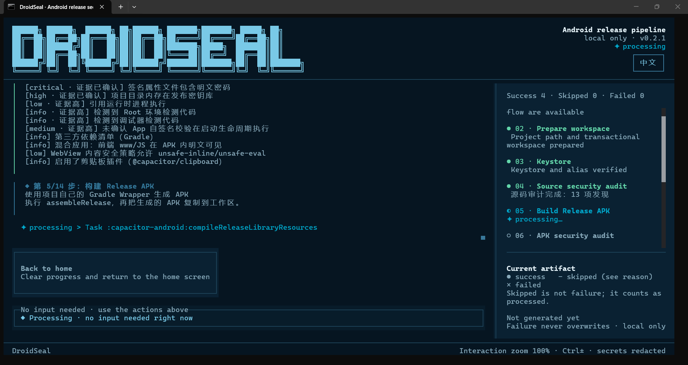

01
定位 JDK / Android SDK 等工具，标出所选流程的缺失项。
DroidSeal（安卓发布封签）帮你完成商业加固前能做的大多数事——环境诊断、源码与 APK 审计、R8 混淆、zipalign 对齐、apksigner 签名与最终验证，商业加固前 · 一键端到端。

从 APK 到签名产物，全程本机完成。每步生成独立制品，可审计、可回退，默认规则开箱即用。
定位 JDK / Android SDK 等工具，标出所选流程的缺失项。
验证输入、复制已有 APK，绝不原地修改。
提前校验现有别名，或用 keytool 新建。
检查 R8 / 资源 / Manifest / 明文签名密码与源码启发式。
执行项目自己的 Gradle Wrapper 并复制产物。
解析 ZIP / DEX / ELF / AXML / ARSC；aapt 仅补充回退。
核验 R8、标准 DEX、反调试与完整性覆盖。
强制 debuggable=false，修改后验证，否则中止回退。
可选 Terser 处理 assets/public、assets/www 脚本。
可选解析 resources.arsc，getIdentifier 命中时保留。
zipalign -p -f 4；保留有效现有签名时自动跳过。
apksigner 输出新的签名 APK。
验证对齐、签名方案、证书并计算 SHA-256。
JSON / Markdown、SBOM、发布门禁与覆盖矩阵。
同一个引擎，四种节奏——分步学、一键跑、先诊断环境，或对 release APK 做运行时加固。
每一步执行前再次显示用途与影响，可“执行此步”或跳过；失败自动回退到步骤开始前的 APK。
填写信息后 14 步连续执行，一般失败自动回退继续；缺工具则暂停等待下载或修复后自动续跑。
定位 JDK / Android SDK 等工具，缺失项列出并提供下载与说明；只检查不改包。
对你自己的 release APK 做运行时加固：manifest 锚定密钥的 DEX 加密、环境门控派生、密钥分片化，可选服务端挑战与 Keystore 绑定。输出如实 findings——真机安装仍是最终验收。
不是黑盒工具，而是一套本地优先、可审计、可验证的发布前流水线。
不连接模型服务，不上传 APK、文件路径或签名凭据。
输出签名验证、SHA-256、JSON 与 Markdown 报告。
每步独立制品，失败解释原因并恢复最近有效 APK。
权限 / targetSdk / 签名 / 深链 / 硬编码密钥 / TLS 启发式。
明文密码只留路径与行号，值从不进入报告或命令。
报告区分已确认 / 高 / 中 / 低置信度，并产出 CycloneDX SBOM。
十个维度——加密/网络/存储/组件/权限/输入输出/配置/生命周期/隐私合规/并发——每个都经正/负精度用例门禁。
加壳、VMP 指令化、控制流平坦化、反调试、完整性、死代码、原生混淆——全部源码接入、构建期生效。
adb 桥接提供 8 个运行期信号——设备矩阵/定向 logcat/UI 冒烟/崩溃·ANR——回附加到静态发现。
30 用例评测器输出 TP/FP/FN、精度与召回——并支持外部 DroidBench/OWASP 目录。
373 个检测器扫十个维度；污点、行为与供应链分析一次完成。
置信度分级与交叉证据把静态发现连接到动态 adb 信号——断言之前先核实。
每个检测器都经正/负精度用例门禁——共 72 个——结果是确认的，不是噪音。
定位——安卓安全工具分两条赛道：审计（MobSF、AndroBugs、APKiD——只分析不改写）与加固（DexGuard / 360 加固保商业方案；Jiagu / nmmp / dpt-shell 开源方案）。DroidSeal 在一条全离线流水线里横跨两条——开源阵营没有第二个项目。对比 MobSF：审计结论直接驱动同一工具链内的修复（审计 → remediation → R8 → 加固 → 重签 → 复验），而非停在报告。对比开源壳：密钥化防御——完整性锚点与反分析投票折入密钥派生，挂 Frida 派生的就是错钥，而主流壳"检测→警告"被绕过零成本。对比商业方案：完全离线（代码不出本机）、行为可审计——如实代价：无 VMP / 白盒密码、无 SLA，项目尚早期。真机安装仍是最终验收。
APK 与签名凭据只在本机处理，不连接模型服务、不上传任何数据。
生成器默认在你的源码上构建期生效。APK 加固（DEX 加密 + 引导壳）只改写你携带加固开关显式传入的 APK——绝不改写未知输入。
每次构建输出如实的 findings 报告——未实现的能力一律标注，绝不虚报。加固 APK 中，反分析状态折入密钥派生：篡改产生错误密钥，而非可绕过的警告。
已知漏洞检查基于本地快照——无外呼、无遥测。
四层验证:264 个单元测试、逐修复对抗回归套件(每个安全修复必须携带 SEC-XX 用例复现其触发条件——完整修复历史见公开安全台账)、每次加固构建的产物验收基线、真机验收套件。如实边界:构建期全绿 ≠ 运行时正确——真机安装是最终测试。
开源 · Apache-2.0 License · 本地优先 · Windows x64 / Linux x64（v1.0.1）
npm install --global droidseal
pip install droidseal